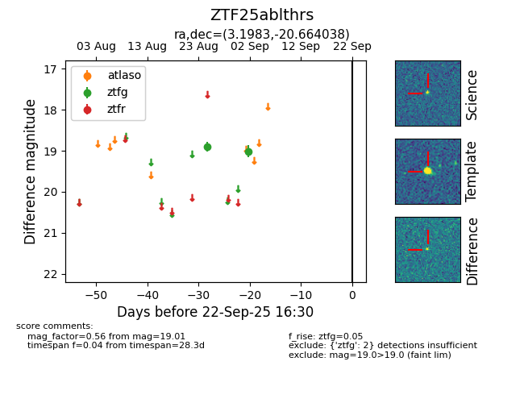

FINK: ZTF25ablthrs
Lasair: ZTF25ablthrs
ALeRCE: ZTF25ablthrs
ZTF25ablthrs (ztf,fink)
equatorial (ra, dec) = (3.1983,-20.66404)
galactic (l, b) = (67.0865,-79.06173)

last ztfg=19.01
2 ztfg detections